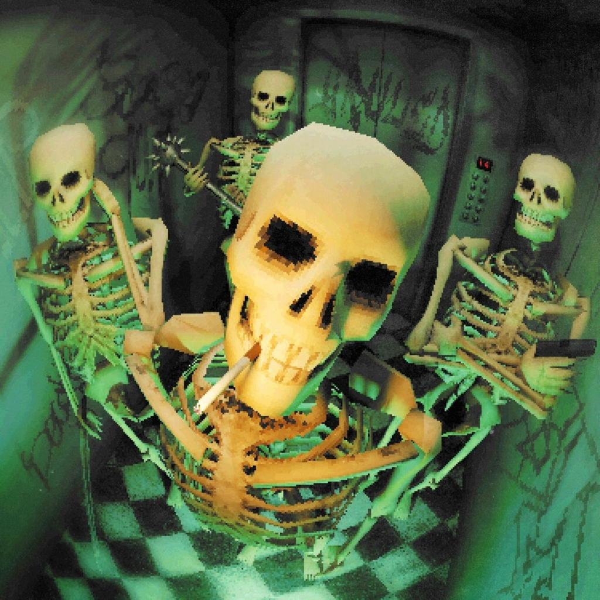
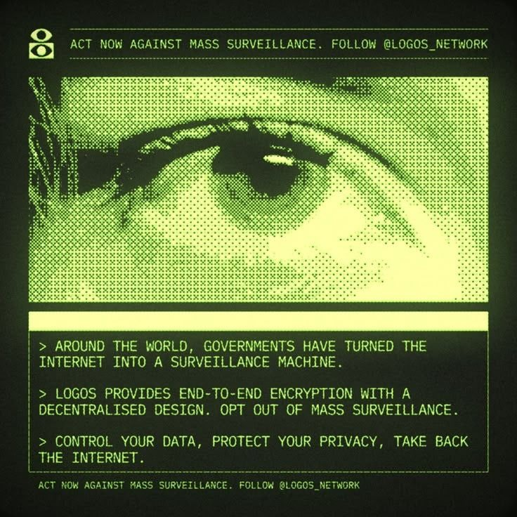

★ MAIN PROJECT
BRIDGE LOCAL ↗
Локальный P2P инструмент для связки Linux и Windows: быстрый удаленный запуск команд и скриптов, передача файлов и заметок, а также удобный терминальный интерфейс (TUI).


Локальный P2P инструмент для связки Linux и Windows: быстрый удаленный запуск команд и скриптов, передача файлов и заметок, а также удобный терминальный интерфейс (TUI).
Консольный ретро-плеер для Яндекс Музыки (Linux / Windows): живой ASCII-спектрограф, кассетная анимация, Моя Волна, скользящая очередь, Device Auth и быстрый движок libmpv.